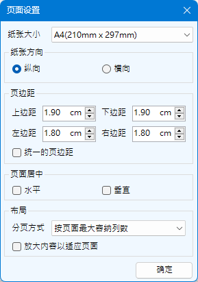

Excel助手Ribbon菜单中数据操作部分点击批量制作按钮即可调出如下操作界面，该功能主要用于制作基于现有模板样式，填充记录数据，然后批量生成已填入数据的各类表格。例如名片，人员信息表等等。
模板区域（必须）指一个制作好的用于输出的表格样式 ，包括固定不变的内容，以及参数。
数据源文件（非必要）指用于填充的记录数据，可以为当前工作簿中的工作表，也可以是其他工作簿中的工作表。
数据源工作表（必要）可以选择一个或多个工作表作为数据源。
二维码/条码，通过此设置可以将模板中的某一字段设置为生成二维码或者条形码。本窗口右侧的二维码/条形码设置为扩展窗口，当需要进行二维码和条形码设置时，点击二维码条形码字段选择栏左侧的设置即可打开。生成的二维码/条形码图形大小以模板中生成该码字段所在单元格的大小限制，即图片边界不会超过单元格。
数据源标题行（非必要）指数据表中标题所在的位置，该位置用于确定模板中的参数在数据源中的位置。如不指定则默认第一行作为标题行。该位置仅指示行号，与当前用于指定行位置所用的工作表无关。即，在任意表中选择了$3:$3，指示标题行位于数据源表格的第3行。
对象阵列列数指复制的模板单位形成的阵列的列数，非Excel的列。
公式引用选项，勾选此选项，填充公式引用而不是直接填充值，如数据源更新，则制作好的表中的数据相应更新。
输出PDF文件程序将利用系统自带的Microsoft Print to PDF打印机将批量制作的内容输出PDF文件，同时，可以点击页面设置按钮，对将要输出的内容进行页面设置。
纸张大小、方向、页边距、页面居中选项与Excel的打印设置相同，其中勾选统一页边距选项时，所有边距均以上边距为准。页面布局，主要针对输出的阵列进行布局，包括四种方式，如下：
按页面最大容纳列数：指缩放之前，按照模板的宽度和可用页面的宽度计算，在保证不分裂单个模板单位的情况下，所能容纳的最多列数。
按每页1个单位：每个复制单位占用一个页面，当页面都不足以显示一个单位时，程序会缩小内容以适应页面范围。
全部列缩放至1页宽：指上述批量制作界面中设定的对象阵列数，将全部阵列缩放到一个页面的宽度，按比例计算高度并划分页数。
全部行缩放至1页高：指输出阵列的所有行缩放到一个页面的高度，按比例计算宽度并划分页数。
放大内容以适应页面，仅在分页方式的第一、二种方式时起作用，因为第三、四种方式本身就是通过缩放完成的。且只在页面所显示内容小于页面尺寸时进行放大，放大的原则是等比例的。程序打印输出的结果在任何情况下都以单位完整为主要条件，因此如果出现选择纸张过小，不能容纳单位宽度的时候，程序会自动缩小以保证单位的完整性。
本程序所需的模板根据用户需求制作，但需要满足如下要求，方可被本程序识别。 见下图样式：
该图中$B$2:$E$4区域即为一个简单的人员信息小卡片类型的模板区域，区域必须连续，且有限的区域，不能是整列或者整行的区域范围。区域地址必须是绝对引用地址。 区域内可以包含字体，边框，固定不变的单元内容以及参数等内容。当包含合并单元格时，合并单元格应完全位于模板区域内部。
本程序可以识别的参数在模板中必须以“_[参数名]”的样式设置，此设计是为避免参数名格式与用户需求冲突。 同时不可避免造成参数输入繁琐，为此，本程序提供了快捷的参数列表创建（参见辅助输入功能），点击输入功能区下拉列表按钮，点击参数列表后，选择数据表标题行，则可以自动为选定的单元格创建一个符合参数名称样式的下拉列表，以便选择。参数名称如包含逗号，则不能通过此功能添加至选择列表中，需手动输入。
参数名称必须与数据源标题中的参数名称一致，但顺序不必一致，模板中不必包含数据源中所有参数，如模板中的参数在数据源中未能找到匹配，则程序输出为空。
批量制作示例：

使用批量制作功能需注意如下事项：